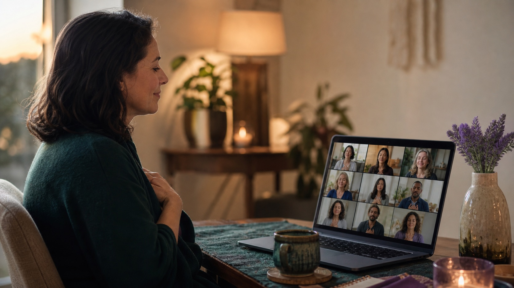

A clear guided practice
Simple preparation, approximately 60 minutes together on Zoom, and a calm return at the end.
Join from your own quiet space for a guided group session in grounding, reflection, rest, and shared intention. No previous experience is needed—and you do not need to commit to a longer program.
This is designed as a complete standalone experience, not a sales call for a larger program.
Simple preparation, approximately 60 minutes together on Zoom, and a calm return at the end.
Time to observe your own experience without being pushed to disclose, perform, or reach a prescribed outcome.
A reflection or small practice you can bring into rest, relationships, boundaries, or daily rhythm afterward.

Prepare a comfortable space, join the group on Zoom, and remain in charge of your own pace throughout.
Available twice-monthly dates appear in the calendar. Select one session and continue directly to Stripe checkout.
There is no consultation or wait-list form for this experience. As soon as a confirmed date and Stripe checkout link are published, you can select, pay, and register directly on this page.
Topics rotate across the month. The team may repeat the themes that participants find most useful, while keeping every description inside clear spiritual-wellbeing boundaries.
Guided rest and body awareness for reconnecting with a subjective sense of steadiness after a demanding season.
Breath, gentle attention, and movement imagery for noticing where the body feels held, open, or ready for more ease.
A reflective space for meeting fear, pressure, fatigue, and unresolved feeling without forcing a particular outcome.
A settling practice combining quiet attention with an optional meditation on the body’s subtle energy centres.
Reflect on learned patterns and practise a clearer, kinder relationship with personal limits and everyday choices.
Prepare a quiet place to sit or lie down, then arrive through breath and a shared intention.
Follow the live or scheduled audio practice. Participation is invitational; you may pause or step away at any time.
Return slowly, notice your experience, and choose a small reflection or grounded action for the days ahead.
Attend another Group Healing theme, stop here, or explore Spiral I when a deeper four-day foundation feels right.
Collective practice can feel unfamiliar. Our role is to make the experience understandable, choice-led, and easier to integrate into real life.
Before the session, the team explains the format in accessible language, answers practical questions, and helps first-time participants prepare without needing prior spiritual experience.
During the practice, Stephanie guides the shared rhythm while the team remains attentive to comfort and choice. Anyone who feels overwhelmed may pause, step away, or receive separate support.
Afterward, participants are guided to settle, reflect, and translate the experience into one grounded action—so insight can meet relationships, routines, and everyday decisions.
Rainbow Sanctuary uses the language of resonance to describe what can happen when people pause around a common intention. We do not present this as a scientifically proven transmission mechanism. Its practical value is human: a shared rhythm can strengthen attention, compassion, accountability, and the courage to meet patterns we often avoid alone.